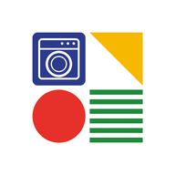

סידור עבודה
מערך הטקסטיל · וולפסון
פותח את הסידור…
להוסיף כפתור למסך הבית
- לוחצים על שיתוף ⬆︎ בתחתית Safari
- בוחרים הוספה למסך הבית
- לוחצים הוספה – וזהו!
חשוב לפתוח את הקישור ב־Safari (לא מתוך וואטסאפ). אם נפתח בוואטסאפ: ⋯ › פתיחה ב־Safari.
- לוחצים על ⋮ בפינה של Chrome
- בוחרים הוספה למסך הבית או התקנת האפליקציה
פותחים את הקישור הזה בטלפון כדי להוסיף כפתור למסך הבית.
צריך קישור אישי
הקישור האישי שלך נשלח אליך ע״י המנהל. פותחים אותו פעם אחת – ומאז הכפתור במסך הבית יזכור אותך.